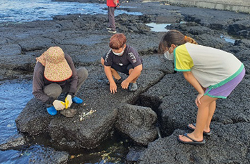

주요사업
- 홈
- 사업소개
- 주요사업
혼저옵서예,
한국어촌어항공단 제주지사입니다.
제주지사는 제주권역의 다양한 어촌 · 어항 · 어장 사업을
보다 긴밀하고 효율적으로 수행하기 위해 설립되었습니다.
국가어항 관리사업
- ① 어항안전점검 : 제주권역 국가어항 기본시설에 대한 안전점검과 적정한 유지관리를 통하여 시설물의 기능과 안전 유지 및 재해예방 도모
- ② 어항유지보수 : 국가어항 시설물 유지보수를 통해 어항시설 이용자의 안전 확보 및 시설물 내구연한 증대
- 김녕항, 위미항, 모슬포항, 도두항, 신양항(추자)
어촌뉴딜사업
- 어촌 및 항․포구를 중심으로 인접한 배후 어촌마을을 포함한 통합개발로 사회․문화․경제․환경적으로 어촌지역의 활력 도모
- [제주시] 함덕항,비양도항,고내항,하우목동권역,종달항,묵리항(추자)
- [서귀포시] 하예항,태흥2리항,온평항,하효항,사계항,세화2리항(가마포구)
일반농산어촌개발사업
- 어촌지역 주민 소득 및 기초생활수준 향상 및 어촌인구유지 및 특화 마을 조성 기여
- [제주시] 한림읍 금능리
- [서귀포시] 성산읍 신양리, 성산읍 고성리
어촌신활력증진사업 예비계획수립
- 해양수산부 역점사업인『어촌신활력증진사업』,『CLEAN 국가어항 시범사업』의 공모에 효과적으로 대응하기 위해 경쟁력 있는 사업대상지 발굴
제주어촌특화지원센터 운영(jejubada.or.kr)
- 특화역량강화(어촌마을/리더)
- 상품개발 및 사업관리(연구개발/어촌기초조사 및 예비후보군 발굴, 어촌특화상품 유통체계 구축)
- 정책지원(바다가꿈 프로젝트)
- 
제주귀어귀촌종합지원센터 운영(sealife.jejubada.or.kr)
- 도시민 어촌유치 프로그램 운영